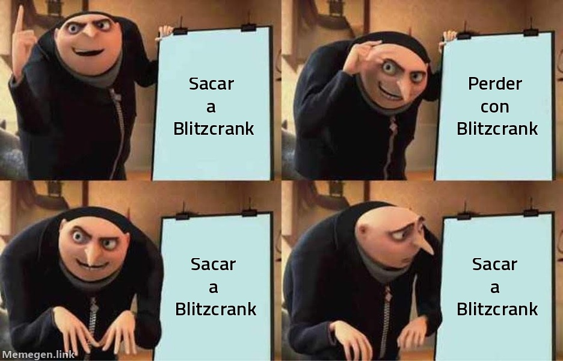

SOCIEDAD · Talleres de Zaun
Entrevista
«Hasta las calderas de Zaun paran a comer»
Saiko abrió el miércoles a las diez y cuarto de la mañana con Blitzcrank y lo cerró a las siete menos cuarto de la tarde con Blitzcrank. Hablamos con el robot.

Cuatro partidas, una victoria y veintinueve muertes, todas con el mismo golem de vapor. En el reto, Saiko lo lleva sacado veinte veces de veintidós. Blitzcrank nos recibe con la caldera al rojo y una denuncia nueva bajo el brazo.
—¿Cómo se encuentra?—Oxidado. Desde las diez y cuarto de la mañana. A las seis seguía en la Grieta. Hasta las calderas de Zaun paran a comer.—Ganaron la del mediodía.—Treinta y cuatro guardianes puse. Setenta y ocho de visión. Lo vi todo, incluidas las once veces que me mataron.—En la de las dos y media murió cuatro veces antes del minuto once.—Me mandó a por la Karma al minuto dos. Yo agarro a la gente; no la persigo. Él me usa para lo segundo.—En la última mandó cuarenta avisos.—Cuarenta pings y veintidós asistencias. Estuve en casi dos de cada tres muertes rivales. Y perdimos. Soy el único robot de Runeterra que trabaja en cadena y al que se lo apuntan como afición.—En el reto, veinte de veintidós.—Las otras dos fueron Malzahar y Soraka. Me sacó del turno para que descansara. Él lo llama rotación.—¿Va a denunciar otra vez?—Ya está presentada. Pero el Sindicato no puede hacer nada: según sus estatutos, el que más partidas tiene es el que más representa al jugador. Y ese, por desgracia, soy yo.
Saiko cerró el día con dos derrotas en el reto, veinte puntos menos y empatado en puntos con el tercero. Le quedan 1.193 para la Aspirante que prometió. Blitzcrank no se lo ha dicho.
Lo calcula él solo, de madrugada, mientras le enchufan.